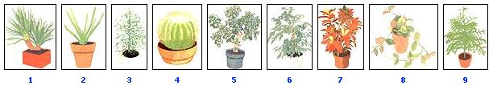

1.Yucca tree (Yucca gloriosa): Also called the palm lily, the yucca has a woody trunk topped with a rosette of stiff, leathery, sword-shaped leaves. The sturdy plant tolerates many adversities and likes to go dry between waterings. 2. Medicine plant(Aloe vera): This slow growing lily relative excellent for a sunny table or windowsill. Its gray-green, dagger shaped leaves?marked by soft spines along to edges?contain the skin-healing inner pulp that 'explains its ""first-aid"" nickname. 3. Pencil cactus(Euphorbia tirucalli): This bizarre succulent shrub has pencil-thick, glossy green cylindrical branches that contain a milky white sap. Also called the milkbush, it is a durable, but slow, grower. 4. Golden barrel cactus (Echinocactus grusonii): The barrel carries sharp, golden spines on a globular, light green, ribbed base. Like other cacti and succulents, it enjoys a porous, gritty soil (two parts loam to one part sand) and should be allowed to dry between waterings. 5.Jade plant (Crassula argentea): The stout trunk of the jade (also called the monkey tree or Chinese rubber plant) has thick, bending branches which bear fleshy, succulent leaves. A durable species, it adapts well to drafts and dry locations. 6. Weeping fig tree(Ficusbenjamina): This graceful mulberry carries small, shiny, deep green leaves that are pointed at the tips. In warmth and good light, it becomes densely Foliated, but under adversity it sheds readily. Keep it in a small container. 7.Craton(Codiaeum variegatum pictum): This showy tropical tub plant sports magnificent multicolored leaves in many shapes and patterns. Strong sunlight helps young! yellow-flecked foliage turn orange and red. For best results, keep a pebble-filled tray beneath a croton pot to increase humidity. 8.Wax plant(Hoya carnosa): A wining milkweed, the hoya bears thick, leathery leaves and long, persistent spursthatproduce fragrant, pinkish white flowers. An ideal hanging basket plant for sunny windows, it appreciates good drainage along with liberal summertime watering. 9. Norfolk bland pine (Araucarta heterophylla): The long, wide-spreading branches of the Norfolk (also called star-pine or Christmas tree plant) extend parallel to the ground and are set with soft-pointed needles. It tolerates heat, chills, and some drying out.